首发公众号：MarkerHub
作者：吕一明
视频讲解：https://www.bilibili.com/video/BV1af4y1s7Wh/
线上演示：https://www.markerhub.com/vueadmin/
转载请保留此应用，万分感谢！
关注公众号 MarkerHub，回复【 VueAdmin 】可以加群讨论学习、另外还会不定时安排 B 站视频直播答疑！
一个 spring security + jwt + vue 的前后端分离项目！综合运用！
首发公众号：MarkerHub
作者：吕一明
视频讲解：https://www.bilibili.com/video/BV1af4y1s7Wh/
线上演示：https://www.markerhub.com/vueadmin/
转载请保留此应用，万分感谢！
# 1. 前言
从零开始搭建一个项目骨架，最好选择合适熟悉的技术，并且在未来易拓展，适合微服务化体系等。所以一般以 Springboot 作为我们的框架基础，这是离不开的了。
然后数据层，我们常用的是 Mybatis，易上手，方便维护。但是单表操作比较困难，特别是添加字段或减少字段的时候，比较繁琐，所以这里我推荐使用 Mybatis Plus（https://mp.baomidou.com/），为简化开发而生，只需简单配置，即可快速进行 CRUD 操作，从而节省大量时间。
作为一个项目骨架，权限也是我们不能忽略的，上一个项目 vueblog 我们使用了 shiro，但是有些同学想学学 SpringSecurity，所以这一期我们使用 security 作为我们的权限控制和会话控制的框架。
考虑到项目可能需要部署多台，一些需要共享的信息就保存在中间件中，Redis 是现在主流的缓存中间件，也适合我们的项目。
然后因为前后端分离，所以我们使用 jwt 作为我们用户身份凭证，并且 session 我们会禁用，这样以前传统项目使用的方式我们可能就不再适合使用，这点需要注意了。
ok，我们现在就开始搭建我们的项目脚手架！
技术栈：
- SpringBoot
- mybatis plus
- spring security
- lombok
- redis
- hibernate validatior
- jwt
# 2. 新建 springboot 项目，注意版本
这里，我们使用 IDEA 来开发我们项目，新建步骤比较简单，我们就不截图了。
开发工具与环境：
- idea
- mysql
- jdk 8
- maven3.3.9
新建好的项目结构如下，SpringBoot 版本使用的目前最新的 2.4.0 版本
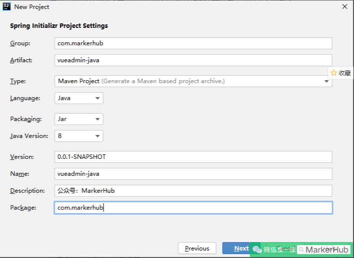
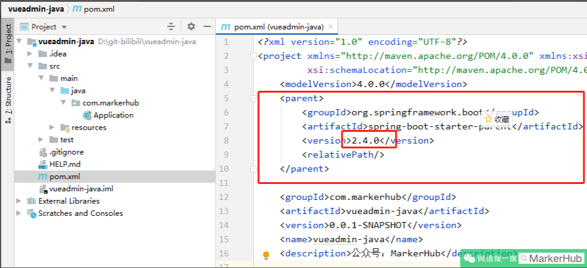
pom 的 jar 包导入如下：
<parent> | |
<groupId>org.springframework.boot</groupId> | |
<artifactId>spring-boot-starter-parent</artifactId> | |
<version>2.4.0</version> | |
<relativePath/> | |
</parent> | |
<groupId>com.markerhub</groupId> | |
<artifactId>vueadmin-java</artifactId> | |
<version>0.0.1-SNAPSHOT</version> | |
<name>vueadmin-java</name> | |
<description>公众号：MarkerHub</description> | |
<properties> | |
<java.version>1.8</java.version> | |
</properties> | |
<dependencies> | |
<dependency> | |
<groupId>org.springframework.boot</groupId> | |
<artifactId>spring-boot-starter-web</artifactId> | |
</dependency> | |
<dependency> | |
<groupId>org.springframework.boot</groupId> | |
<artifactId>spring-boot-devtools</artifactId> | |
<scope>runtime</scope> | |
<optional>true</optional> | |
</dependency> | |
<dependency> | |
<groupId>org.projectlombok</groupId> | |
<artifactId>lombok</artifactId> | |
<optional>true</optional> | |
</dependency> | |
</dependencies> |
- devtools：项目的热加载重启插件
- lombok：简化代码的工具
# 3. 整合 mybatis plus，生成代码
接下来，我们来整合 mybatis plus，让项目能完成基本的增删改查操作。步骤很简单：可以去官网看看：https://mp.baomidou.com/guide/
# 第一步：导入 jar 包
pom 中导入 mybatis plus 的 jar 包，因为后面会涉及到代码生成，所以我们还需要导入页面模板引擎，这里我们用的是 freemarker。
<!-- 整合 mybatis plus https://baomidou.com/--> | |
<dependency> | |
<groupId>com.baomidou</groupId> | |
<artifactId>mybatis-plus-boot-starter</artifactId> | |
<version>3.4.1</version> | |
</dependency> | |
<!--mp 代码生成器 --> | |
<dependency> | |
<groupId>com.baomidou</groupId> | |
<artifactId>mybatis-plus-generator</artifactId> | |
<version>3.4.1</version> | |
</dependency> | |
<dependency> | |
<groupId>org.freemarker</groupId> | |
<artifactId>freemarker</artifactId> | |
<version>2.3.30</version> | |
</dependency> | |
<dependency> | |
<groupId>mysql</groupId> | |
<artifactId>mysql-connector-java</artifactId> | |
<scope>runtime</scope> | |
</dependency> |
# 第二步：然后去写配置文件
server: | |
port: 8081 | |
# DataSource Config | |
spring: | |
datasource: | |
driver-class-name: com.mysql.cj.jdbc.Driver | |
url: jdbc:mysql://localhost:3306/vueadmin?useUnicode=true&useSSL=false&characterEncoding=utf8&serverTimezone=Asia/Shanghai | |
username: root | |
password: admin | |
mybatis-plus: | |
mapper-locations: classpath*:/mapper/**Mapper.xml |
上面除了配置数据库的信息，还配置了 myabtis plus 的 mapper 的 xml 文件的扫描路径，这一步不要忘记了。然后因为前段默认是 8080 端口了，所以后端我们设置为 8081 端口，防止端口冲突。
# 第三步：开启 mapper 接口扫描，添加分页、防全表更新插件
新建一个包：通过 @mapperScan 注解指定要变成实现类的接口所在的包，然后包下面的所有接口在编译之后都会生成相应的实现类。
- com.markerhub.config.MybatisPlusConfig
@Configuration | |
@MapperScan("com.markerhub.mapper") | |
public class MybatisPlusConfig { | |
/** | |
* 新的分页插件，一缓和二缓遵循 mybatis 的规则， | |
* 需要设置 MybatisConfiguration#useDeprecatedExecutor = false | |
* 避免缓存出现问题 (该属性会在旧插件移除后一同移除) | |
*/ | |
@Bean | |
public MybatisPlusInterceptor mybatisPlusInterceptor() { | |
MybatisPlusInterceptor interceptor = new MybatisPlusInterceptor(); | |
interceptor.addInnerInterceptor(new PaginationInnerInterceptor(DbType.MYSQL)); | |
// 防止全表更新和删除 | |
interceptor.addInnerInterceptor(new BlockAttackInnerInterceptor()); | |
return interceptor; | |
} | |
@Bean | |
public ConfigurationCustomizer configurationCustomizer() { | |
return configuration -> configuration.setUseDeprecatedExecutor(false); | |
} | |
} |
上面代码中，我们给 Mybatis plus 添加了 2 个拦截器，这是根据 mp 官网配置的：
- PaginationInnerInterceptor：新的分页插件
- BlockAttackInnerInterceptor：防止全表更新和删除
# 第四步：创建数据库和表
因为是后台管理系统的权限模块，所以我们需要考虑的表主要就几个：用户表、角色表、菜单权限表、以及关联的用户角色中间表、菜单角色中间表。就 5 个表，至于什么字段其实都听随意的，用户表里面除了用户名、密码字段必要，其他其实都听随意，然后角色和菜单我们可以参考一下其他的系统、或者自己在做项目的过程中需要的时候在添加也行，反正重新生成代码也是非常简便的事情，综合考虑，数据库名称为 vueadmin，我们建表语句如下：
- vueadmin.sql
- vueadmin-java / 数据库脚本 - vueadmin.sql・MarkerHub/VueAdmin - Gitee.com
- 用户名 / 密码 admin/111111 test/1234567
/* | |
Navicat MySQL Data Transfer | |
Source Server : localhost | |
Source Server Version : 50717 | |
Source Host : localhost:3306 | |
Source Database : vueadmin | |
Target Server Type : MYSQL | |
Target Server Version : 50717 | |
File Encoding : 65001 | |
Date: 2021-01-23 09:41:50 | |
*/ | |
SET FOREIGN_KEY_CHECKS=0; | |
-- ---------------------------- | |
-- Table structure for sys_menu | |
-- ---------------------------- | |
DROP TABLE IF EXISTS `sys_menu`; | |
CREATE TABLE `sys_menu` ( | |
`id` bigint(20) NOT NULL AUTO_INCREMENT, | |
`parent_id` bigint(20) DEFAULT NULL COMMENT '父菜单ID，一级菜单为0', | |
`name` varchar(64) NOT NULL, | |
`path` varchar(255) DEFAULT NULL COMMENT '菜单URL', | |
`perms` varchar(255) DEFAULT NULL COMMENT '授权(多个用逗号分隔，如：user:list,user:create)', | |
`component` varchar(255) DEFAULT NULL, | |
`type` int(5) NOT NULL COMMENT '类型 0：目录 1：菜单 2：按钮', | |
`icon` varchar(32) DEFAULT NULL COMMENT '菜单图标', | |
`orderNum` int(11) DEFAULT NULL COMMENT '排序', | |
`created` datetime NOT NULL, | |
`updated` datetime DEFAULT NULL, | |
`statu` int(5) NOT NULL, | |
PRIMARY KEY (`id`), | |
UNIQUE KEY `name` (`name`) USING BTREE | |
) ENGINE=InnoDB AUTO_INCREMENT=21 DEFAULT CHARSET=utf8; | |
-- ---------------------------- | |
-- Table structure for sys_role | |
-- ---------------------------- | |
DROP TABLE IF EXISTS `sys_role`; | |
CREATE TABLE `sys_role` ( | |
`id` bigint(20) NOT NULL AUTO_INCREMENT, | |
`name` varchar(64) NOT NULL, | |
`code` varchar(64) NOT NULL, | |
`remark` varchar(64) DEFAULT NULL COMMENT '备注', | |
`created` datetime DEFAULT NULL, | |
`updated` datetime DEFAULT NULL, | |
`statu` int(5) NOT NULL, | |
PRIMARY KEY (`id`), | |
UNIQUE KEY `name` (`name`) USING BTREE, | |
UNIQUE KEY `code` (`code`) USING BTREE | |
) ENGINE=InnoDB AUTO_INCREMENT=8 DEFAULT CHARSET=utf8; | |
-- ---------------------------- | |
-- Table structure for sys_role_menu | |
-- ---------------------------- | |
DROP TABLE IF EXISTS `sys_role_menu`; | |
CREATE TABLE `sys_role_menu` ( | |
`id` bigint(20) NOT NULL AUTO_INCREMENT, | |
`role_id` bigint(20) NOT NULL, | |
`menu_id` bigint(20) NOT NULL, | |
PRIMARY KEY (`id`) | |
) ENGINE=InnoDB AUTO_INCREMENT=102 DEFAULT CHARSET=utf8mb4; | |
-- ---------------------------- | |
-- Table structure for sys_user | |
-- ---------------------------- | |
DROP TABLE IF EXISTS `sys_user`; | |
CREATE TABLE `sys_user` ( | |
`id` bigint(20) NOT NULL AUTO_INCREMENT, | |
`username` varchar(64) DEFAULT NULL, | |
`password` varchar(64) DEFAULT NULL, | |
`avatar` varchar(255) DEFAULT NULL, | |
`email` varchar(64) DEFAULT NULL, | |
`city` varchar(64) DEFAULT NULL, | |
`created` datetime DEFAULT NULL, | |
`updated` datetime DEFAULT NULL, | |
`last_login` datetime DEFAULT NULL, | |
`statu` int(5) NOT NULL, | |
PRIMARY KEY (`id`), | |
UNIQUE KEY `UK_USERNAME` (`username`) USING BTREE | |
) ENGINE=InnoDB AUTO_INCREMENT=7 DEFAULT CHARSET=utf8; | |
-- ---------------------------- | |
-- Table structure for sys_user_role | |
-- ---------------------------- | |
DROP TABLE IF EXISTS `sys_user_role`; | |
CREATE TABLE `sys_user_role` ( | |
`id` bigint(20) NOT NULL AUTO_INCREMENT, | |
`user_id` bigint(20) NOT NULL, | |
`role_id` bigint(20) NOT NULL, | |
PRIMARY KEY (`id`) | |
) ENGINE=InnoDB AUTO_INCREMENT=15 DEFAULT CHARSET=utf8mb4; |
# 第五步：代码生成
- 获取项目数据库所对应表和字段的信息
- 新建一个 freemarker 的页面模板 - SysUser.java.ftl - $
- 提供相关需要进行渲染的动态数据 - BaseEntity、表字段、注释、baseEntity=SuperEntity
- 使用 freemarker 模板引擎进行渲染！ - SysUser.java
# 获取表 | |
SELECT | |
* | |
FROM | |
information_schema. TABLES | |
WHERE | |
TABLE_SCHEMA = (SELECT DATABASE()); | |
# 获取字段 | |
SELECT | |
* | |
FROM | |
information_schema. COLUMNS | |
WHERE | |
TABLE_SCHEMA = (SELECT DATABASE()) | |
AND TABLE_NAME = "sys_user"; |
有了数据库之后，那么现在就已经可以使用 mybatis plus 了，官方给我们提供了一个代码生成器，然后我写上自己的参数之后，就可以直接根据数据库表信息生成 entity、service、mapper 等接口和实现类。
因为代码比较长，就不贴出来了，说明一下重点：
- com.markerhub.CodeGenerator
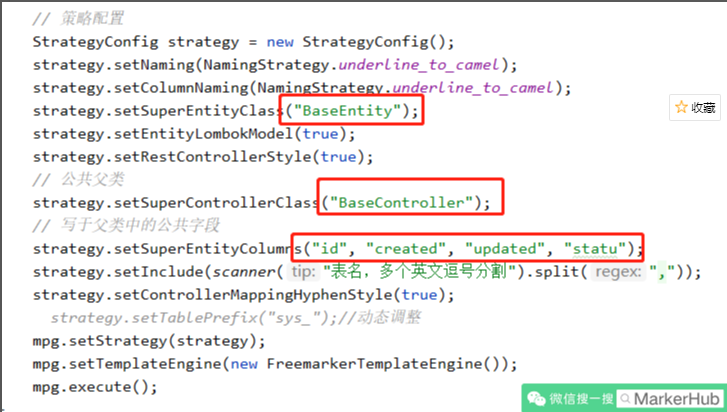
上面代码生成的过程中，我默认所有的实体类都继承 BaseEntity，控制器都继承 BaseController，所以在代码生成之前，最好先编写这两个基类：
- com.markerhub.entity.BaseEntity
@Data | |
public class BaseEntity implements Serializable { | |
@TableId(value = "id", type = IdType.AUTO) | |
private Long id; | |
private LocalDateTime created; | |
private LocalDateTime updated; | |
private Integer statu; | |
} |
- com.markerhub.controller.BaseController
public class BaseController { | |
@Autowired | |
HttpServletRequest req; | |
} |
然后我们单独运行 CodeGenerator 的 main 方法，注意调整 CodeGenerator 的数据库连接、账号密码啥的，然后我们输入表名称，通过逗号隔开：sys_menu,sys_role,sys_role_menu,sys_user,sys_user_role
执行结果成功：
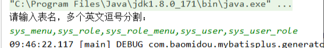
然后我们生成了一些代码如下：
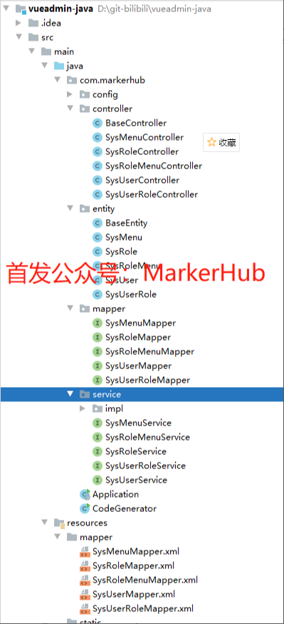
这里有点需要注意，因为关联的用户角色中间表、菜单角色中间表我们是没有 created 等几个公共字段的，所以我们把这两个实体继承 BaseEntity 去掉：
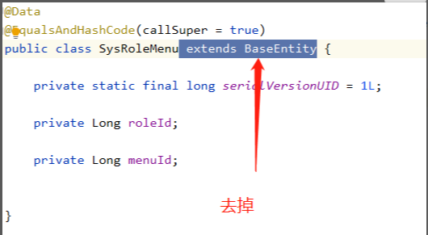
最后这样子的：
@Data | |
public class SysRoleMenu { | |
... | |
} |
简洁！方便！经过上面的步骤，基本上我们已经把 mybatis plus 框架集成到项目中了，并且也生成了基本的代码，省了好多功夫。然后我们做个简单测试：
- com.markerhub.controller.TestController
@RestController | |
public class TestController { | |
@Autowired | |
SysUserService userService; | |
@GetMapping("/test") | |
public Object test() { | |
return userService.list(); | |
} | |
} |
然后 sys_user 随意添加几条数据，结果如下：
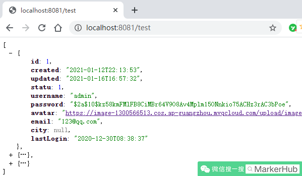
ok，毛什么问题，大家不用在意密码是怎么生成的，后面我们会说到，你现在随意填写就好了。对了，好多人问我的浏览器的 json 数据怎么显示这么好看，这是因为我用了 JSONView 这个插件：
# 4. 结果封装
因为是前后端分离的项目，所以我们有必要统一一个结果返回封装类，这样前后端交互的时候有个统一的标准，约定结果返回的数据是正常的或者遇到异常了。
这里我们用到了一个 Result 的类，这个用于我们的异步统一返回的结果封装。一般来说，结果里面有几个要素必要的
- 是否成功，可用 code 表示（如 200 表示成功，400 表示异常）
- 结果消息
- 结果数据
所以可得到封装如下：
- com.markerhub.common.lang.Result
@Data | |
public class Result implements Serializable { | |
private int code; // 200 是正常，非 200 表示异常 | |
private String msg; | |
private Object data; | |
public static Result succ(Object data) { | |
return succ(200, "操作成功", data); | |
} | |
public static Result succ(int code, String msg, Object data) { | |
Result r = new Result(); | |
r.setCode(code); | |
r.setMsg(msg); | |
r.setData(data); | |
return r; | |
} | |
public static Result fail(String msg) { | |
return fail(400, msg, null); | |
} | |
public static Result fail(String msg, Object data) { | |
return fail(400, msg, data); | |
} | |
public static Result fail(int code, String msg, Object data) { | |
Result r = new Result(); | |
r.setCode(code); | |
r.setMsg(msg); | |
r.setData(data); | |
return r; | |
} | |
} |
另外出了在结果封装类上的 code 可以提现数据是否正常，我们还可以通过 http 的状态码来提现访问是否遇到了异常，比如 401 表示五权限拒绝访问等，注意灵活使用。
# 5. 全局异常处理
有时候不可避免服务器报错的情况，如果不配置异常处理机制，就会默认返回 tomcat 或者 nginx 的 5XX 页面，对普通用户来说，不太友好，用户也不懂什么情况。这时候需要我们程序员设计返回一个友好简单的格式给前端。
处理办法如下：通过使用 @ControllerAdvice 来进行统一异常处理，@ExceptionHandler (value = RuntimeException.class) 来指定捕获的 Exception 各个类型异常 ，这个异常的处理，是全局的，所有类似的异常，都会跑到这个地方处理。
步骤二、定义全局异常处理，@ControllerAdvice 表示定义全局控制器异常处理，@ExceptionHandler 表示针对性异常处理，可对每种异常针对性处理。
- com.markerhub.common.exception.GlobalExceptionHandler
/** | |
* 全局异常处理 | |
*/ | |
@Slf4j | |
@RestControllerAdvice | |
public class GlobalExceptionHandler { | |
@ResponseStatus(HttpStatus.FORBIDDEN) | |
@ExceptionHandler(value = AccessDeniedException.class) | |
public Result handler(AccessDeniedException e) { | |
log.info("security权限不足：----------------{}", e.getMessage()); | |
return Result.fail("权限不足"); | |
} | |
@ResponseStatus(HttpStatus.BAD_REQUEST) | |
@ExceptionHandler(value = MethodArgumentNotValidException.class) | |
public Result handler(MethodArgumentNotValidException e) { | |
log.info("实体校验异常：----------------{}", e.getMessage()); | |
BindingResult bindingResult = e.getBindingResult(); | |
ObjectError objectError = bindingResult.getAllErrors().stream().findFirst().get(); | |
return Result.fail(objectError.getDefaultMessage()); | |
} | |
@ResponseStatus(HttpStatus.BAD_REQUEST) | |
@ExceptionHandler(value = IllegalArgumentException.class) | |
public Result handler(IllegalArgumentException e) { | |
log.error("Assert异常：----------------{}", e.getMessage()); | |
return Result.fail(e.getMessage()); | |
} | |
@ResponseStatus(HttpStatus.BAD_REQUEST) | |
@ExceptionHandler(value = RuntimeException.class) | |
public Result handler(RuntimeException e) { | |
log.error("运行时异常：----------------{}", e); | |
return Result.fail(e.getMessage()); | |
} | |
} |
上面我们捕捉了几个异常：
- ShiroException：shiro 抛出的异常，比如没有权限，用户登录异常
- IllegalArgumentException：处理 Assert 的异常
- MethodArgumentNotValidException：处理实体校验的异常
- RuntimeException：捕捉其他异常
# 6. 整合 Spring Security
很多人不懂 spring security，觉得这个框架比 shiro 要难，的确，security 更加复杂一点，同时功能也更加强大，我们首先来看一下 security 的原理，这里我们引用一张来自江南一点雨大佬画的一张原理图（https://blog.csdn.net/u012702547/article/details/89629415）：
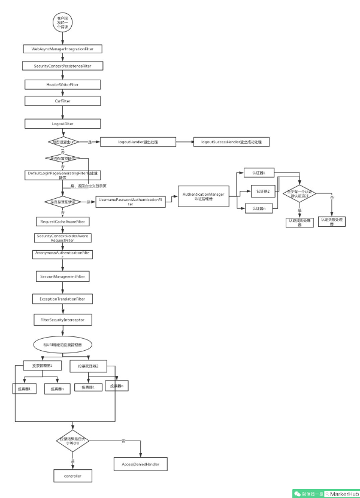
（引自江南一点雨的博客）
上面这张图一定要好好看，特别清晰，毕竟 security 是责任链的设计模式，是一堆过滤器链的组合，如果对于这个流程都不清楚，那么你就谈不上理解 security。那么针对我们现在的这个系统，我们可以自己设计一个 security 的认证方案，结合江南一点雨大佬的博客，我们得到这样一套流程：
https://www.processon.com/view/link/606b0b5307912932d09adcb3
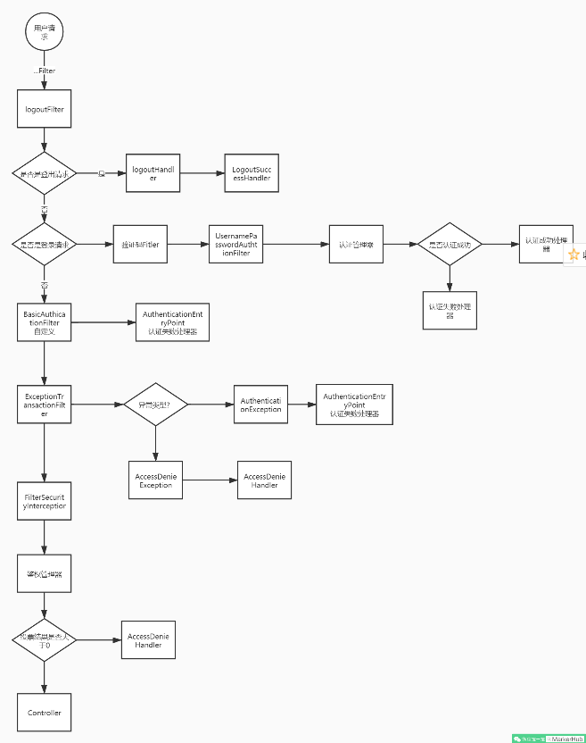
流程说明：
- 客户端发起一个请求，进入 Security 过滤器链。
- 当到 LogoutFilter 的时候判断是否是登出路径，如果是登出路径则到 logoutHandler ，如果登出成功则到 logoutSuccessHandler 登出成功处理。如果不是登出路径则直接进入下一个过滤器。
- 当到 UsernamePasswordAuthenticationFilter 的时候判断是否为登录路径，如果是，则进入该过滤器进行登录操作，如果登录失败则到 AuthenticationFailureHandler ，登录失败处理器处理，如果登录成功则到 AuthenticationSuccessHandler 登录成功处理器处理，如果不是登录请求则不进入该过滤器。
- 进入认证 BasicAuthenticationFilter 进行用户认证，成功的话会把认证了的结果写入到 SecurityContextHolder 中 SecurityContext 的属性 authentication 上面。如果认证失败就会交给 AuthenticationEntryPoint 认证失败处理类，或者抛出异常被后续 ExceptionTranslationFilter 过滤器处理异常，如果是 AuthenticationException 就交给 AuthenticationEntryPoint 处理，如果是 AccessDeniedException 异常则交给 AccessDeniedHandler 处理。
- 当到 FilterSecurityInterceptor 的时候会拿到 uri ，根据 uri 去找对应的鉴权管理器，鉴权管理器做鉴权工作，鉴权成功则到 Controller 层，否则到 AccessDeniedHandler 鉴权失败处理器处理。
Spring Security 实战干货：必须掌握的一些内置 Filter：https://blog.csdn.net/qq_35067322/article/details/102690579
ok，上面我们说的流程中涉及到几个组件，有些是我们需要根据实际情况来重写的。因为我们是使用 json 数据进行前后端数据交互，并且我们返回结果也是特定封装的。我们先再总结一下我们需要了解的几个组件：
- LogoutFilter - 登出过滤器
- logoutSuccessHandler - 登出成功之后的操作类
- UsernamePasswordAuthenticationFilter - from 提交用户名密码登录认证过滤器
- AuthenticationFailureHandler - 登录失败操作类
- AuthenticationSuccessHandler - 登录成功操作类
- BasicAuthenticationFilter - Basic 身份认证过滤器
- SecurityContextHolder - 安全上下文静态工具类
- AuthenticationEntryPoint - 认证失败入口
- ExceptionTranslationFilter - 异常处理过滤器
- AccessDeniedHandler - 权限不足操作类
- FilterSecurityInterceptor - 权限判断拦截器、出口
有了上面的组件，那么认证与授权两个问题我们就已经接近啦，我们现在需要做的就是去重写我们的一些关键类。
# 引入 Security 与 jwt
首先我们导入 security 包，因为我们前后端交互用户凭证用的是 JWT，所以我们也导入 jwt 的相关包，然后因为验证码的存储需要用到 redis，所以引入 redis。最后为了一些工具类，我们引入 hutool。
- pom.xml
<!-- springboot security --> | |
<dependency> | |
<groupId>org.springframework.boot</groupId> | |
<artifactId>spring-boot-starter-security</artifactId> | |
</dependency> | |
<dependency> | |
<groupId>org.springframework.boot</groupId> | |
<artifactId>spring-boot-starter-data-redis</artifactId> | |
</dependency> | |
<!-- jwt --> | |
<dependency> | |
<groupId>io.jsonwebtoken</groupId> | |
<artifactId>jjwt</artifactId> | |
<version>0.9.1</version> | |
</dependency> | |
<dependency> | |
<groupId>com.github.axet</groupId> | |
<artifactId>kaptcha</artifactId> | |
<version>0.0.9</version> | |
</dependency> | |
<!-- hutool 工具类 --> | |
<dependency> | |
<groupId>cn.hutool</groupId> | |
<artifactId>hutool-all</artifactId> | |
<version>5.3.3</version> | |
</dependency> | |
<dependency> | |
<groupId>org.apache.commons</groupId> | |
<artifactId>commons-lang3</artifactId> | |
<version>3.11</version> | |
</dependency> |
启动 redis，然后我们再启动项目，这时候我们再去访问 http://localhost:8081/test，会发现系统会先判断到你未登录跳转到 http://localhost:8081/login，因为 security 内置了登录页，用户名为 user，密码在启动项目的时候打印在了控制台。登录完成之后我们才可以正常访问接口。
因为每次启动密码都会改变，所以我们通过配置文件来配置一下默认的用户名和密码：
- application.yml
spring: | |
security: | |
user: | |
name: user | |
password: 111111 |
# 用户认证
首先我们来解决用户认证问题，分为首次登陆，和二次认证。
- 首次登录认证：用户名、密码和验证码完成登录
- 二次 token 认证：请求头携带 Jwt 进行身份认证
使用用户名密码来登录的，然后我们还想添加图片验证码，那么 security 给我们提供的 UsernamePasswordAuthenticationFilter 能使用吗？
首先 security 的所有过滤器都是没有图片验证码这回事的，看起来不适用了。其实这里我们可以灵活点，如果你依然想沿用自带的 UsernamePasswordAuthenticationFilter，那么我们就在这过滤器之前添加一个图片验证码过滤器。当然了我们也可以通过自定义过滤器继承 UsernamePasswordAuthenticationFilter，然后自己把验证码验证逻辑和认证逻辑写在一起，这也是一种解决方式。
我们这次解决方式是在 UsernamePasswordAuthenticationFilter 之前自定义一个图片过滤器 CaptchaFilter，提前校验验证码是否正确，这样我们就可以使用 UsernamePasswordAuthenticationFilter 了，然后登录正常或失败我们都可以通过对应的 Handler 来返回我们特定格式的封装结果数据。
# 生成验证码
首先我们先生成验证码，之前我们已经引用了 google 的验证码生成器，我们先来配置一下图片验证码的生成规则：
- com.markerhub.config.KaptchaConfig
@Configuration | |
public class KaptchaConfig { | |
@Bean | |
public DefaultKaptcha producer() { | |
Properties properties = new Properties(); | |
properties.put("kaptcha.border", "no"); | |
properties.put("kaptcha.textproducer.font.color", "black"); | |
properties.put("kaptcha.textproducer.char.space", "4"); | |
properties.put("kaptcha.image.height", "40"); | |
properties.put("kaptcha.image.width", "120"); | |
properties.put("kaptcha.textproducer.font.size", "30"); | |
Config config = new Config(properties); | |
DefaultKaptcha defaultKaptcha = new DefaultKaptcha(); | |
defaultKaptcha.setConfig(config); | |
return defaultKaptcha; | |
} | |
} |
上面我定义了图片验证码的长宽字体颜色等，自己可以调整哈。
然后我们通过控制器提供生成验证码的方法：
- com.markerhub.controller.AuthController
@Slf4j | |
@RestController | |
public class AuthController extends BaseController{ | |
@Autowired | |
private Producer producer; | |
/** | |
* 图片验证码 | |
*/ | |
@GetMapping("/captcha") | |
public Result captcha(HttpServletRequest request, HttpServletResponse response) throws IOException { | |
String code = producer.createText(); | |
String key = UUID.randomUUID().toString(); | |
BufferedImage image = producer.createImage(code); | |
ByteArrayOutputStream outputStream = new ByteArrayOutputStream(); | |
ImageIO.write(image, "jpg", outputStream); | |
BASE64Encoder encoder = new BASE64Encoder(); | |
String str = "data:image/jpeg;base64,"; | |
String base64Img = str + encoder.encode(outputStream.toByteArray()); | |
// 存储到 redis 中 | |
redisUtil.hset(Const.captcha_KEY, key, code, 120); | |
log.info("验证码 -- {} - {}", key, code); | |
return Result.succ( | |
MapUtil.builder() | |
.put("token", key) | |
.put("base64Img", base64Img) | |
.build() | |
); | |
} | |
} |
因为前后端分离，我们禁用了 session，所以我们把验证码放在了 redis 中，使用一个随机字符串作为 key，并传送到前端，前端再把随机字符串和用户输入的验证码提交上来，这样我们就可以通过随机字符串获取到保存的验证码和用户的验证码进行比较了是否正确了。
然后因为图片验证码的方式，所以我们进行了 encode，把图片进行了 base64 编码，这样前端就可以显示图片了。
而前端的处理，我们之前是使用了 mockjs 进行随机生成数据的，现在后端有接口之后，我们只需要在 main.js 中去掉 mockjs 的引入即可，这样前端就可以访问后端的接口而不被 mock 拦截了。
# 验证码认证过滤器
图片验证码进行认证验证码是否正确。
- CaptchaFilter
/** | |
* 图片验证码校验过滤器，在登录过滤器前 | |
*/ | |
@Slf4j | |
@Component | |
public class CaptchaFilter extends OncePerRequestFilter { | |
private final String loginUrl = "/login"; | |
@Autowired | |
RedisUtil redisUtil; | |
@Autowired | |
LoginFailureHandler loginFailureHandler; | |
@Override | |
protected void doFilterInternal(HttpServletRequest request, HttpServletResponse response, FilterChain filterChain) | |
throws ServletException, IOException { | |
String url = request.getRequestURI(); | |
if (loginUrl.equals(url) && request.getMethod().equals("POST")) { | |
log.info("获取到login链接，正在校验验证码 -- " + url); | |
try { | |
validate(request); | |
} catch (CaptchaException e) { | |
log.info(e.getMessage()); | |
// 交给登录失败处理器处理 | |
loginFailureHandler.onAuthenticationFailure(request, response, e); | |
} | |
} | |
filterChain.doFilter(request, response); | |
} | |
private void validate(HttpServletRequest request) { | |
String code = request.getParameter("code"); | |
String token = request.getParameter("token"); | |
if (StringUtils.isBlank(code) || StringUtils.isBlank(token)) { | |
throw new CaptchaException("验证码不能为空"); | |
} | |
if(!code.equals(redisUtil.hget(Const.captcha_KEY, token))) { | |
throw new CaptchaException("验证码不正确"); | |
} | |
// 一次性使用 | |
redisUtil.hdel(Const.captcha_KEY, token); | |
} | |
} |
上面代码中，因为验证码需要存储，所以添加了 RedisUtil 工具类，这个工具类代码我们就不贴出来了。
- com.markerhub.util.RedisUtil
然后验证码出错的时候我们返回异常信息，这是一个认证异常，所以我们自定了一个 CaptchaException：
- com.javacat.common.exception.CaptchaException
public class CaptchaException extends AuthenticationException { | |
public CaptchaException(String msg) { | |
super(msg); | |
} | |
} |
- com.markerhub.common.lang.Const
public class Const { | |
public static final String captcha_KEY = "captcha"; | |
} |
然后认证失败的话，我们之前说过，登录失败的时候交给 AuthenticationFailureHandler，所以我们自定义了 LoginFailureHandler
- com.markerhub.security.LoginFailureHandler
@Component | |
public class LoginFailureHandler implements AuthenticationFailureHandler { | |
@Override | |
public void onAuthenticationFailure(HttpServletRequest request, HttpServletResponse response, AuthenticationException exception) throws IOException, ServletException { | |
response.setContentType("application/json;charset=UTF-8"); | |
ServletOutputStream outputStream = response.getOutputStream(); | |
Result result = Result.fail( | |
"Bad credentials".equals(exception.getMessage()) ? "用户名或密码不正确" : exception.getMessage() | |
); | |
outputStream.write(JSONUtil.toJsonStr(result).getBytes("UTF-8")); | |
outputStream.flush(); | |
outputStream.close(); | |
} | |
} |
其实主要就是获取异常的消息，然后封装到 Result，最后转成 json 返回给前端而已哈。
然后我们配置 SecurityConfig
- com.markerhub.config.SecurityConfig
@Configuration | |
@EnableGlobalMethodSecurity(prePostEnabled = true) | |
@EnableWebSecurity | |
public class SecurityConfig extends WebSecurityConfigurerAdapter { | |
@Autowired | |
LoginFailureHandler loginFailureHandler; | |
@Autowired | |
CaptchaFilter captchaFilter; | |
public static final String[] URL_WHITELIST = { | |
"/webjars/**", | |
"/favicon.ico", | |
"/captcha", | |
"/login", | |
"/logout", | |
}; | |
@Override | |
protected void configure(HttpSecurity http) throws Exception { | |
http.cors().and().csrf().disable() | |
.formLogin() | |
.failureHandler(loginFailureHandler) | |
.and() | |
.authorizeRequests() | |
.antMatchers(URL_WHITELIST).permitAll() // 白名单 | |
.anyRequest().authenticated() | |
// 不会创建 session | |
.and() | |
.sessionManagement() | |
.sessionCreationPolicy(SessionCreationPolicy.STATELESS) | |
.and() | |
.addFilterBefore(captchaFilter, UsernamePasswordAuthenticationFilter.class) // 登录验证码校验过滤器 | |
; | |
} | |
} |
首先 formLogin 我们定义了表单登录提交的方式以及定义了登录失败的处理器，后面我们还要定义登录成功的处理器的。然后 authorizeRequests 我们除了白名单的链接之外其他请求都会被拦截。再然后就是禁用 session，最后是设定验证码过滤器在登录过滤器之前。
然后我们打开前端的 /login，发现出现了跨域的问题，后面我处理，我们先用 postman 调试接口。
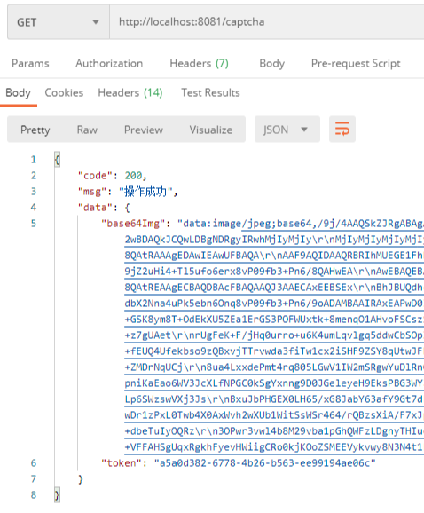
可以看到，我们的随机码 token 和 base64Img 编码都是正常的。控制台上看到我们的验证是 2yyxm：
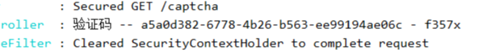
然后我们尝试登录，因为之前我们已经设置了用户名密码为 user/111111，所以我们提交表单的时候再带上我们的 token 和验证码。
这时候我们就可以去提交表单了吗，其实还不可以，为啥？因为就算我们登录成功，security 默认跳转到 / 链接，但是又会因为没有权限访问 /，所有又会教你去登录，所以我们必须取消原先默认的登录成功之后的操作，根据我们之前分析的流程，登录成功之后会走 AuthenticationSuccessHandler，因此在登录之前，我们先去自定义这个登录成功操作类：
- com.markerhub.security.LoginSuccessHandler
@Component | |
public class LoginSuccessHandler implements AuthenticationSuccessHandler { | |
@Autowired | |
JwtUtils jwtUtils; | |
@Override | |
public void onAuthenticationSuccess(HttpServletRequest request, HttpServletResponse response, Authentication authentication) throws IOException, ServletException { | |
response.setContentType("application/json;charset=UTF-8"); | |
ServletOutputStream outputStream = response.getOutputStream(); | |
// 生成 jwt 返回 | |
String jwt = jwtUtils.generateToken(authentication.getName()); | |
response.setHeader(jwtUtils.getHeader(), jwt); | |
Result result = Result.succ(""); | |
outputStream.write(JSONUtil.toJsonStr(result).getBytes("UTF-8")); | |
outputStream.flush(); | |
outputStream.close(); | |
} | |
} |
登录成功之后我们利用用户名生成 jwt，jwtUtils 这个工具类我就不贴代码了哈，去看我们项目源码，然后把 jwt 作为请求头返回回去，名称就叫 Authorization 哈。我们需要在配置文件中配置一些 jwt 的一些密钥信息：
- application.yml
markerhub: | |
jwt: | |
# 加密秘钥 | |
secret: f4e2e52034348f86b67cde581c0f9eb5 | |
# token 有效时长，7 天，单位秒 | |
expire: 604800 | |
header: Authorization |
然后我们再 security 配置中添加上登录成功之后的操作类：
- com.markerhub.config.SecurityConfig
@Autowired | |
LoginSuccessHandler loginSuccessHandler; | |
... | |
# configure代码： | |
http.cors().and().csrf().disable() | |
.formLogin() | |
.failureHandler(loginFailureHandler) | |
.successHandler(loginSuccessHandler) |
然后我们去 postman 的进行我们的登录测试：
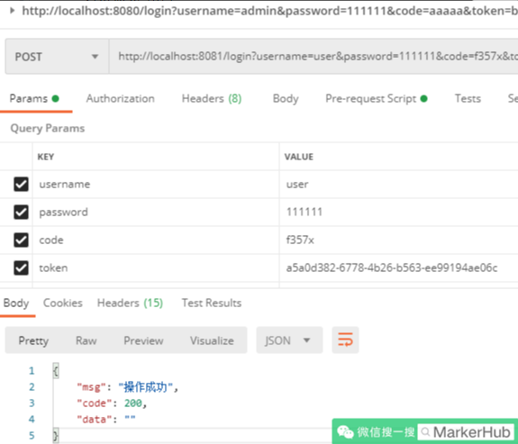
上面我们可以看到，我们已经可以登录成功了。然后去结果的请求头中查看 jwt：
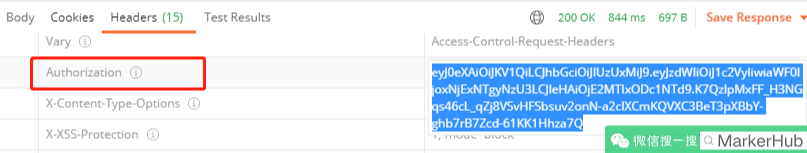
搞定，登录成功啦，验证码也正常验证了。
# 身份认证 - 1
登录成功之后前端就可以获取到了 jwt 的信息，前端中我们是保存在了 store 中，同时也保存在了 localStorage 中，然后每次 axios 请求之前，我们都会添加上我们的请求头信息，可以回顾一下：
- 前端项目的 axios.js
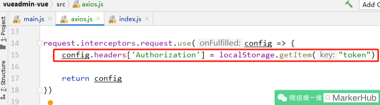
所以后端进行用户身份识别的时候，我们需要通过请求头中获取 jwt，然后解析出我们的用户名，这样我们就可以知道是谁在访问我们的接口啦，然后判断用户是否有权限等操作。
那么我们自定义一个过滤器用来进行识别 jwt。
- JWTAuthenticationFilter
@Slf4j | |
public class JWTAuthenticationFilter extends BasicAuthenticationFilter { | |
@Autowired | |
JwtUtils jwtUtils; | |
@Autowired | |
RedisUtil redisUtil; | |
@Autowired | |
SysUserService sysUserService; | |
public JWTAuthenticationFilter(AuthenticationManager authenticationManager) { | |
super(authenticationManager); | |
} | |
@Override | |
protected void doFilterInternal(HttpServletRequest request, HttpServletResponse response, FilterChain chain) throws IOException, ServletException { | |
log.info("jwt 校验 filter"); | |
String jwt = request.getHeader(jwtUtils.getHeader()); | |
if (StrUtil.isBlankOrUndefined(jwt)) { | |
chain.doFilter(request, response); | |
return; | |
} | |
Claims claim = jwtUtils.getClaimByToken(jwt); | |
if (claim == null) { | |
throw new JwtException("token异常！"); | |
} | |
if (jwtUtils.isTokenExpired(claim.getExpiration())) { | |
throw new JwtException("token已过期"); | |
} | |
String username = claim.getSubject(); | |
log.info("用户-{}，正在登陆！", username); | |
UsernamePasswordAuthenticationToken usernamePasswordAuthenticationToken | |
= new UsernamePasswordAuthenticationToken(username, null, new TreeSet<>()); | |
SecurityContextHolder.getContext().setAuthentication(usernamePasswordAuthenticationToken); | |
chain.doFilter(request, response); | |
} | |
} |
上面的逻辑也很简单，正如我前面说到的，获取到用户名之后我们直接把封装成 UsernamePasswordAuthenticationToken，之后交给 SecurityContextHolder 参数传递 authentication 对象，这样后续 security 就能获取到当前登录的用户信息了，也就完成了用户认证。
当认证失败的时候会进入 AuthenticationEntryPoint，于是我们自定义认证失败返回的数据：
- com.markerhub.security.JwtAuthenticationEntryPoint
/** | |
* 定义认证失败处理类 | |
*/ | |
@Slf4j | |
@Component | |
public class JwtAuthenticationEntryPoint implements AuthenticationEntryPoint { | |
@Override | |
public void commence(HttpServletRequest request, HttpServletResponse response, AuthenticationException authException) | |
throws IOException { | |
log.info("认证失败！未登录！"); | |
response.setContentType("application/json;charset=UTF-8"); | |
response.setStatus(HttpServletResponse.SC_UNAUTHORIZED); | |
ServletOutputStream outputStream = response.getOutputStream(); | |
Result result = Result.fail("请先登录！"); | |
outputStream.write(JSONUtil.toJsonStr(result).getBytes("UTF-8")); | |
outputStream.flush(); | |
outputStream.close(); | |
} | |
} |
不过是啥原因，认证失败，我们就要求重新登录，所以返回的信息直接明了 “请先登录！” 哈哈。
然后我们把认证过滤器和认证失败入口配置到 SecurityConfig 中：
- com.markerhub.config.SecurityConfig
@Bean | |
JWTAuthenticationFilter jwtAuthenticationFilter() throws Exception { | |
JWTAuthenticationFilter filter = new JWTAuthenticationFilter(authenticationManager()); | |
return filter; | |
} | |
.and() | |
.exceptionHandling() | |
.authenticationEntryPoint(jwtAuthenticationEntryPoint) | |
.and() | |
.addFilter(jwtAuthenticationFilter()) | |
.addFilterBefore(captchaFilter, UsernamePasswordAuthenticationFilter.class) // 登录验证码校验过滤器 |
这样携带 jwt 请求头我们就可以正常访问我们的接口了。
# 身份认证 - 2
之前我们的用户名密码配置在配置文件中的，而且密码也用的是明文，这明显不符合我们的要求，我们的用户必须是存储在数据库中，密码也是得经过加密的。所以我们先来解决这个问题，然后再去弄授权。
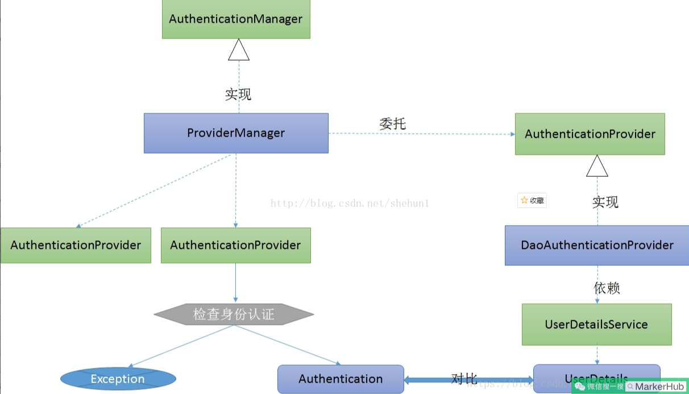
首先来插入一条用户数据，但这里有个问题，就是我们的密码怎么生成？密码怎么来的？这里我们使用 Security 内置了的 BCryptPasswordEncoder，里面就有生成和匹配密码是否正确的方法，也就是加密和验证策略。因此我们再 SecurityConfig 中进行配置：
- com.markerhub.config.SecurityConfig
@Bean | |
BCryptPasswordEncoder bCryptPasswordEncoder() { | |
return new BCryptPasswordEncoder(); | |
} |
这样系统就会使用我们找个新的密码策略进行匹配密码是否正常了。之前我们配置文件配置的用户名密码去掉：
- application.yml
# security: | |
# user: | |
# name: user | |
# password: 111111 |
ok，我们先使用 BCryptPasswordEncoder 给我们生成一个密码，给数据库添加一条数据先，我们再 TestController 中注入 BCryptPasswordEncoder，然后使用 encode 进行密码加密，对了，记得在 SecurityConfig 中吧 /test/** 添加白名单哈，不然访问会提示你登录！！
- com.markerhub.controller.TestController
@Autowired | |
BCryptPasswordEncoder bCryptPasswordEncoder; | |
@GetMapping("/test/pass") | |
public Result passEncode() { | |
// 密码加密 | |
String pass = bCryptPasswordEncoder.encode("111111"); | |
// 密码验证 | |
boolean matches = bCryptPasswordEncoder.matches("111111", pass); | |
return Result.succ(MapUtil.builder() | |
.put("pass", pass) | |
.put("marches", matches) | |
.build() | |
); | |
} |
可以看到我密码是 111111，加密以及验证的结果如下：1c)
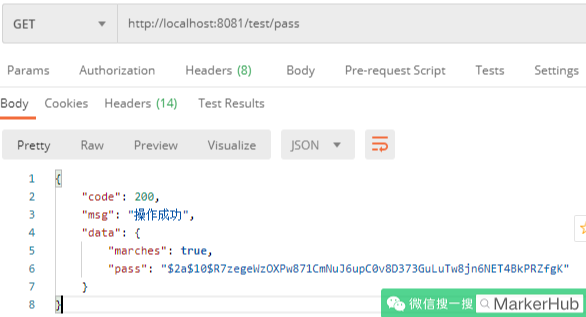
data 中的那一串字符串就是我们的密码了，可以看到 marches 也是 true，说明密码验证也是正确的，我们添加到我们数据库 sys_user 表中：
INSERT INTO `vueadmin`.`sys_user` (`id`, `username`, `password`, `avatar`, `email`, `city`, `created`, `updated`, `last_login`, `statu`) VALUES ('1', 'admin', '$2a$10$R7zegeWzOXPw871CmNuJ6upC0v8D373GuLuTw8jn6NET4BkPRZfgK', 'https://image-1300566513.cos.ap-guangzhou.myqcloud.com/upload/images/5a9f48118166308daba8b6da7e466aab.jpg', '123@qq.com', '广州', '2021-01-12 22:13:53', '2021-01-16 16:57:32', '2020-12-30 08:38:37', '1'); |
后面我们就可以使用 admin/111111 登录我们的系统哈。
但是先我们登录过程系统不是从我们数据库中获取数据的，因此，我们需要重新定义这个查用户数据的过程，我们需要重写 UserDetailsService 接口。
- com.markerhub.security.UserDetailsServiceImpl
@Slf4j | |
@Service | |
public class UserDetailsServiceImpl implements UserDetailsService { | |
@Autowired | |
SysUserService sysUserService; | |
@Override | |
public UserDetails loadUserByUsername(String username) throws UsernameNotFoundException { | |
SysUser sysUser = sysUserService.getByUsername(username); | |
if (sysUser == null) { | |
throw new UsernameNotFoundException("用户名或密码不正确!"); | |
} | |
return new AccountUser(sysUser.getId(), sysUser.getUsername(), sysUser.getPassword(), new TreeSet<>()); | |
} | |
} |
因为 security 在认证用户身份的时候会调用 UserDetailsService.loadUserByUsername () 方法，因此我们重写了之后 security 就可以根据我们的流程去查库获取用户了。然后我们把 UserDetailsServiceImpl 配置到 SecurityConfig 中：
- com.markerhub.config.SecurityConfig
@Autowired | |
UserDetailsServiceImpl userDetailsService; | |
@Override | |
protected void configure(AuthenticationManagerBuilder auth) throws Exception { | |
auth.userDetailsService(userDetailsService); | |
} |
然后上面 UserDetailsService.loadUserByUsername () 默认返回的 UserDetails，我们自定义了 AccountUser 去重写了 UserDetails，这也是为了后面我们可能会调整用户的一些数据等。
- com.markerhub.security.AccountUser
public class AccountUser implements UserDetails { | |
private Long userId; | |
private String password; | |
private final String username; | |
private final Collection<? extends GrantedAuthority> authorities; | |
private final boolean accountNonExpired; | |
private final boolean accountNonLocked; | |
private final boolean credentialsNonExpired; | |
private final boolean enabled; | |
public AccountUser(Long userId, String username, String password, Collection<? extends GrantedAuthority> authorities) { | |
this(userId, username, password, true, true, true, true, authorities); | |
} | |
public AccountUser(Long userId, String username, String password, boolean enabled, | |
boolean accountNonExpired, boolean credentialsNonExpired, boolean accountNonLocked, | |
Collection<? extends GrantedAuthority> authorities) { | |
Assert.isTrue(username != null && !"".equals(username) && password != null, "Cannot pass null or empty values to constructor"); | |
this.userId = userId; | |
this.username = username; | |
this.password = password; | |
this.enabled = enabled; | |
this.accountNonExpired = accountNonExpired; | |
this.credentialsNonExpired = credentialsNonExpired; | |
this.accountNonLocked = accountNonLocked; | |
this.authorities = authorities; | |
} | |
public Long getUserId() { | |
return userId; | |
} | |
... | |
} |
其实数据基本没变，我就添加多了一个用户的 id 而已。
ok，万事俱备，我们再次尝试去登录，看能不能登录成功。
1、获取验证码：
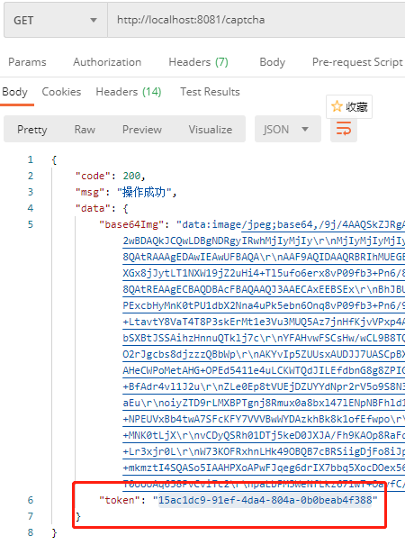
2、从控制台获取到对应的验证码
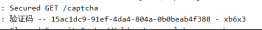
3、提交登录表单
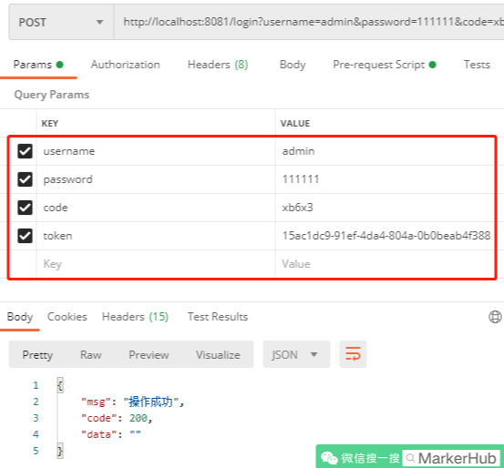
4、登录成功，并在请求头中获取到了 Authorization，也就是 JWT。完美！！
# 解决授权
然后关于权限部分，也是 security 的重要功能，当用户认证成功之后，我们就知道谁在访问系统接口，这是又有一个问题，就是这个用户有没有权限来访问我们这个接口呢，要解决这个问题，我们需要知道用户有哪些权限，哪些角色，这样 security 才能我们做权限判断。
之前我们已经定义及几张表，用户、角色、菜单、以及一些关联表，一般当权限粒度比较细的时候，我们都通过判断用户有没有此菜单或操作的权限，而不是通过角色判断，而用户和菜单是不直接做关联的，是通过用户拥有哪些角色，然后角色拥有哪些菜单权限这样来获得的。
问题 1：我们是在哪里赋予用户权限的？有两个地方：
- 1、用户登录，调用调用 UserDetailsService.loadUserByUsername () 方法时候可以返回用户的权限信息。
- 2、接口调用进行身份认证过滤器时候 JWTAuthenticationFilter，需要返回用户权限信息
问题 2：在哪里决定什么接口需要什么权限？
Security 内置的权限注解：
- @PreAuthorize：方法执行前进行权限检查
- @PostAuthorize：方法执行后进行权限检查
- @Secured：类似于 @PreAuthorize
可以在 Controller 的方法前添加这些注解表示接口需要什么权限。
比如需要 Admin 角色权限：
@PreAuthorize("hasRole('admin')") |
比如需要添加管理员的操作权限
@PreAuthorize("hasAuthority('sys:user:save')") |
ok，我们再来整体梳理一下授权、验证权限的流程：
- 用户登录或者调用接口时候识别到用户，并获取到用户的权限信息
- 注解标识 Controller 中的方法需要的权限或角色
- Security 通过 FilterSecurityInterceptor 匹配 URI 和权限是否匹配
- 有权限则可以访问接口，当无权限的时候返回异常交给 AccessDeniedHandler 操作类处理
ok，流程清晰之后我们就开始我们的编码：
- UserDetailsServiceImpl
@Override | |
public UserDetails loadUserByUsername(String username) throws UsernameNotFoundException { | |
... | |
return new AccountUser(sysUser.getId(), sysUser.getUsername(), sysUser.getPassword(), getUserAuthority(sysUser.getId())); | |
} | |
public List<GrantedAuthority> getUserAuthority(Long userId) { | |
// 通过内置的工具类，把权限字符串封装成 GrantedAuthority 列表 | |
return AuthorityUtils.commaSeparatedStringToAuthorityList( | |
sysUserService.getUserAuthorityInfo(userId) | |
); | |
} |
- com.markerhub.security.JWTAuthenticationFilter
SysUser sysUser = sysUserService.getByUsername(username); | |
List<GrantedAuthority> grantedAuthorities = userDetailsService.getUserAuthority(sysUser.getId()); | |
UsernamePasswordAuthenticationToken usernamePasswordAuthenticationToken | |
= new UsernamePasswordAuthenticationToken(username, null, grantedAuthorities); |
代码中的 com.markerhub.service.impl.SysUserServiceImpl#getUserAuthorityInfo 是重点：
@Slf4j | |
@Service | |
public class SysUserServiceImpl extends ServiceImpl<SysUserMapper, SysUser> implements SysUserService { | |
... | |
@Override | |
public String getUserAuthorityInfo(Long userId) { | |
SysUser sysUser = this.getById(userId); | |
String authority = null; | |
if (redisUtil.hasKey("GrantedAuthority:" + sysUser.getUsername())) { | |
// 优先从缓存获取 | |
authority = (String)redisUtil.get("GrantedAuthority:" + sysUser.getUsername()); | |
} else { | |
List<SysRole> roles = sysRoleService.list(new QueryWrapper<SysRole>() | |
.inSql("id", "select role_id from sys_user_role where user_id = " + userId)); | |
List<Long> menuIds = sysUserMapper.getNavMenuIds(userId); | |
List<SysMenu> menus = sysMenuService.listByIds(menuIds); | |
String roleNames = roles.stream().map(r -> "ROLE_" + r.getCode()).collect(Collectors.joining(",")); | |
String permNames = menus.stream().map(m -> m.getPerms()).collect(Collectors.joining(",")); | |
authority = roleNames.concat(",").concat(permNames); | |
log.info("用户ID - {} ---拥有的权限：{}", userId, authority); | |
redisUtil.set("GrantedAuthority:" + sysUser.getUsername(), authority, 60*60); | |
} | |
return authority; | |
} | |
} |
可以看到，我通过用户 id 分别获取到用户的角色信息和菜单信息，然后通过逗号链接起来，因为角色信息我们需要这样 “ROLE_”+ 角色，所以才有了上面的写法：
比如用户拥有 Admin 角色和添加用户权限，则最后的字符串是：ROLE_admin,sys:user:save。
同时为了避免多次查库，我做了一层缓存，这里理解应该不难。
然后 sysUserMapper.getNavMenuIds (userId) 因为要查询数据库，具体 SQL 如下：
- com.markerhub.mapper.SysUserMapper#getNavMenuIds
<select id="getNavMenuIds" resultType="java.lang.Long"> | |
SELECT | |
DISTINCT rm.menu_id | |
FROM | |
sys_user_role ur | |
LEFT JOIN `sys_role_menu` rm ON rm.role_id = ur.role_id | |
WHERE | |
ur.user_id = #{userId}; | |
</select> |
上面表示通过用户 ID 获取用户关联的菜单的 id，因此需要用到两个中间表的关联了。
ok，这样我们就赋予了用户角色和操作权限了。后面我们只需要在 Controller 添加上具体注解表示需要的权限，Security 就会自动帮我们自动完成权限校验了。
# 权限缓存
因为上面我在获取用户权限那里添加了个缓存，这时候问题来了，就是权限缓存的实时更新问题，比如当后台更新某个管理员的权限角色信息的时候如果权限缓存信息没有实时更新，就会出现操作无效的问题，那么我们现在点定义几个方法，用于清除某个用户或角色或者某个菜单的权限的方法：
- com.markerhub.service.impl.SysUserServiceImpl
// 删除某个用户的权限信息 | |
@Override | |
public void clearUserAuthorityInfo(String username) { | |
redisUtil.del("GrantedAuthority:" + username); | |
} | |
// 删除所有与该角色关联的用户的权限信息 | |
@Override | |
public void clearUserAuthorityInfoByRoleId(Long roleId) { | |
List<SysUser> sysUsers = this.list(new QueryWrapper<SysUser>() | |
.inSql("id", "select user_id from sys_user_role where role_id = " + roleId) | |
); | |
sysUsers.forEach(u -> { | |
this.clearUserAuthorityInfo(u.getUsername()); | |
}); | |
} | |
// 删除所有与该菜单关联的所有用户的权限信息 | |
@Override | |
public void clearUserAuthorityInfoByMenuId(Long menuId) { | |
List<SysUser> sysUsers = sysUserMapper.listByMenuId(menuId); | |
sysUsers.forEach(u -> { | |
this.clearUserAuthorityInfo(u.getUsername()); | |
}); | |
} |
上面最后一个方法查到了与菜单关联的所有用户的，具体 sql 如下：
- com.markerhub.mapper.SysUserMapper#listByMenuId
<select id="listByMenuId" resultType="com.javacat.entity.SysUser"> | |
SELECT | |
DISTINCT | |
su.* | |
FROM | |
sys_user_role ur | |
LEFT JOIN `sys_role_menu` rm ON rm.role_id = ur.role_id | |
LEFT JOIN `sys_user` su ON su.id = ur.user_id | |
WHERE | |
rm.menu_id = #{menuId}; | |
</select> |
有了这几个方法之后，在哪里调用？这就简单了，在更新、删除角色权限、更新、删除菜单的时候调用，虽然我们现在还没写到这几个方法，后续我们再写增删改查的时候记得加上就行啦。
# 退出数据返回
jwt -username
token - 随机码 - redis
- com.markerhub.security.JwtLogoutSuccessHandler
@Component | |
public class JwtLogoutSuccessHandler implements LogoutSuccessHandler { | |
@Autowired | |
JwtUtils jwtUtils; | |
@Override | |
public void onLogoutSuccess(HttpServletRequest request, HttpServletResponse response, Authentication authentication) | |
throws IOException, ServletException { | |
if (authentication != null) { | |
new SecurityContextLogoutHandler().logout(request, response, authentication); | |
} | |
response.setContentType("application/json;charset=UTF-8"); | |
response.setHeader(jwtUtils.getHeader(), ""); | |
ServletOutputStream out = response.getOutputStream(); | |
Result result = Result.succ(""); | |
out.write(JSONUtil.toJsonStr(result).getBytes("UTF-8")); | |
out.flush(); | |
out.close(); | |
} |
# 无权限数据返回
- com.markerhub.security.JwtAccessDeniedHandler
@Slf4j | |
@Component | |
public class JwtAccessDeniedHandler implements AccessDeniedHandler { | |
@Override | |
public void handle(HttpServletRequest request, HttpServletResponse response, AccessDeniedException accessDeniedException) | |
throws IOException, ServletException { | |
// response.sendError(HttpServletResponse.SC_FORBIDDEN, accessDeniedException.getMessage()); | |
log.info("权限不够！！"); | |
response.setContentType("application/json;charset=UTF-8"); | |
response.setStatus(HttpServletResponse.SC_FORBIDDEN); | |
ServletOutputStream outputStream = response.getOutputStream(); | |
Result result = Result.fail(accessDeniedException.getMessage()); | |
outputStream.write(JSONUtil.toJsonStr(result).getBytes("UTF-8")); | |
outputStream.flush(); | |
outputStream.close(); | |
} | |
} |
致此，SpringSecurity 就已经完美整合到了我们的项目中来了。
# 7. 解决跨域问题
上面的调试我们都是使用的 postman，如果我们和前端进行对接的时候，会出现跨域的问题，如何解决？
- com.markerhub.config.CorsConfig
@Configuration | |
public class CorsConfig implements WebMvcConfigurer { | |
private CorsConfiguration buildConfig() { | |
CorsConfiguration corsConfiguration = new CorsConfiguration(); | |
corsConfiguration.addAllowedOrigin("*"); | |
corsConfiguration.addAllowedHeader("*"); | |
corsConfiguration.addAllowedMethod("*"); | |
corsConfiguration.addExposedHeader("Authorization"); | |
return corsConfiguration; | |
} | |
@Bean | |
public CorsFilter corsFilter() { | |
UrlBasedCorsConfigurationSource source = new UrlBasedCorsConfigurationSource(); | |
source.registerCorsConfiguration("/**", buildConfig()); | |
return new CorsFilter(source); | |
} | |
@Override | |
public void addCorsMappings(CorsRegistry registry) { | |
registry.addMapping("/**") | |
.allowedOrigins("*") | |
// .allowCredentials(true) | |
.allowedMethods("GET", "POST", "DELETE", "PUT") | |
.maxAge(3600); | |
} | |
} |
# 8. 前后端对接的问题
因为我们之前开发前端的时候，我们都是使用 mockjs 返回随机数据的，一般来说问题不会很大，我就怕有些同学再去掉 mock 之后，和后端对接却显示不出数据，这就尴尬了。这时候我建议你去看我的开发视频哈。
后面因为都是接口的增删改查，难度其实不是特别大，所以大部分时候我都会直接贴代码，如果想看手把手教程，还是去看我的教学视频哈，B 站搜索 MarkerHub 就可以啦，公众号也是叫 MarkerHub。
# 9. 菜单接口开发
我们先来开发菜单的接口，因为这 3 个表：用户表、角色表、菜单表，才有菜单表是不需要通过其他表来获取信息的。比如用户需要关联角色，角色需要关联菜单，而菜单不需要主动关联其他表。因此菜单表的增删改查是最简单的。
再回到我们的前端项目，登录完成之后我们通过 JWT 获取项目的导航菜单和权限，那么接下来我们就先编写这个接口。
获取菜单导航和权限的链接是 /sys/menu/nav，然后我们的菜单导航的 json 数据应该是这样的：
{ | |
title: '角色管理', | |
icon: 'el-icon-rank', | |
path: '/sys/roles', | |
name: 'SysRoles', | |
component: 'sys/Role', | |
children: [] | |
} |
然后返回的权限数据应该是个数组：
["sys:menu:list","sys:menu:save","sys:user:list"...] |
注意导航菜单那里有个 children，也就是子菜单，是个树形结构，因为我们的菜单可能这样：
系统管理 - 菜单管理 - 添加菜单 |
可以看到这就已经有 3 级了菜单了。
所以在打代码时候要注意这个关系的关联。我们的 SysMenu 实体类中有个 parentId，但是没有 children，因此我们可以在 SysMenu 中添加一个 children，当然了其实不添加也可以，因为我们也需要一个 dto，这样我们才能按照上面 json 数据格式返回。
我们还是来添加一个 children 吧：
- com.markerhub.entity.SysMenu
@Data | |
@EqualsAndHashCode(callSuper = true) | |
public class SysMenu extends BaseEntity { | |
... | |
@TableField(exist = false) | |
private List<SysMenu> children = new ArrayList<>(); | |
} |
然后我们也先来定义一个 SysMenuDto 吧，知道要返回什么样的数据，我们就只需要去填充数据就好了
- com.markerhub.common.dto.SysMenuDto
@Data | |
public class SysMenuDto implements Serializable { | |
private Long id; | |
private String title; | |
private String icon; | |
private String path; | |
private String name; | |
private String component; | |
List<SysMenuDto> children = new ArrayList<>(); | |
} |
ok，我们来开始我们的编码
- com.markerhub.controller.SysMenuController#nav
/** | |
* 获取当前用户的菜单栏以及权限 | |
*/ | |
@GetMapping("/nav") | |
public Result nav(Principal principal) { | |
String username = principal.getName(); | |
SysUser sysUser = sysUserService.getByUsername(username); | |
// ROLE_Admin,sys:user:save | |
String[] authoritys = StringUtils.tokenizeToStringArray( | |
sysUserService.getUserAuthorityInfo(sysUser.getId()) | |
, ","); | |
return Result.succ( | |
MapUtil.builder() | |
.put("nav", sysMenuService.getcurrentUserNav()) | |
.put("authoritys", authoritys) | |
.map() | |
); | |
} |
方法中 Principal principal 表示注入当前用户的信息，getName 就可以获取当当前用户的用户名了。sysUserService.getUserAuthorityInfo 方法我们之前已经说过了，就在我们登录完成或者身份认证时候需要返回用户权限时候编写的。然后通过 StringUtils.tokenizeToStringArray 把字符串通过逗号分开组成数组形式。
重点在与 sysMenuService.getcurrentUserNav，获取当前用户的菜单导航，
@Service | |
public class SysMenuServiceImpl extends ServiceImpl<SysMenuMapper, SysMenu> implements SysMenuService { | |
... | |
/** | |
* 获取当前用户菜单导航 | |
*/ | |
@Override | |
public List<SysMenuDto> getcurrentUserNav() { | |
String username = (String) SecurityContextHolder.getContext().getAuthentication().getPrincipal(); | |
SysUser sysUser = sysUserService.getByUsername(username); | |
// 获取用户的所有菜单 | |
List<Long> menuIds = sysUserMapper.getNavMenuIds(sysUser.getId()); | |
List<SysMenu> menus = buildTreeMenu(this.listByIds(menuIds)); | |
return convert(menus); | |
} | |
/** | |
* 把 list 转成树形结构的数据 | |
*/ | |
private List<SysMenu> buildTreeMenu(List<SysMenu> menus){ | |
List<SysMenu> finalMenus = new ArrayList<>(); | |
for (SysMenu menu : menus) { | |
// 先寻找各自的孩子 | |
for (SysMenu e : menus) { | |
if (e.getParentId() == menu.getId()) { | |
menu.getChildren().add(e); | |
} | |
} | |
// 提取出父节点 | |
if (menu.getParentId() == 0L) { | |
finalMenus.add(menu); | |
} | |
} | |
return finalMenus; | |
} | |
/** | |
* menu 转 menuDto | |
*/ | |
private List<SysMenuDto> convert(List<SysMenu> menus) { | |
List<SysMenuDto> menuDtos = new ArrayList<>(); | |
menus.forEach(m -> { | |
SysMenuDto dto = new SysMenuDto(); | |
dto.setId(m.getId()); | |
dto.setName(m.getPerms()); | |
dto.setTitle(m.getName()); | |
dto.setComponent(m.getComponent()); | |
dto.setIcon(m.getIcon()); | |
dto.setPath(m.getPath()); | |
if (m.getChildren().size() > 0) { | |
dto.setChildren(convert(m.getChildren())); | |
} | |
menuDtos.add(dto); | |
}); | |
return menuDtos; | |
} | |
} |
接口中 sysUserMapper.getNavMenuIds 我们之前就已经写过的了，通过用户 id 获取菜单的 id，然后后面就是转成树形结构，buildTreeMenu 方法的思想很简单，我们现实把菜单循环，让所有菜单先找到各自的子节点，然后我们在把最顶级的菜单获取出来，这样顶级下面有二级，二级也有自己的三级。最后就是 convert 把 menu 转成 menuDto。这个比较简单，就不说了。
好了，导航菜单已经开发完毕，我们来写菜单管理的增删改查，因为菜单列表也是个树形接口，这次我们就不是获取当前用户的菜单列表的，而是所有菜单然后组成树形结构，一样的思想，数据不一样而已。
- com.markerhub.controller.SysMenuController
@GetMapping("/info/{id}") | |
@PreAuthorize("hasAuthority('sys:menu:list')") | |
public Result info(@PathVariable("id") Long id) { | |
return Result.succ(sysMenuService.getById(id)); | |
} | |
@GetMapping("/list") | |
@PreAuthorize("hasAuthority('sys:menu:list')") | |
public Result list() { | |
List<SysMenu> menus = sysMenuService.tree(); | |
return Result.succ(menus); | |
} | |
@PostMapping("/save") | |
@PreAuthorize("hasAuthority('sys:menu:save')") | |
public Result save(@Validated @RequestBody SysMenu sysMenu) { | |
sysMenu.setCreated(LocalDateTime.now()); | |
sysMenu.setStatu(Const.STATUS_ON); | |
sysMenuService.save(sysMenu); | |
return Result.succ(sysMenu); | |
} | |
@PostMapping("/update") | |
@PreAuthorize("hasAuthority('sys:menu:update')") | |
public Result update(@Validated @RequestBody SysMenu sysMenu) { | |
sysMenu.setUpdated(LocalDateTime.now()); | |
sysMenuService.updateById(sysMenu); | |
// 清除所有与该菜单相关的权限缓存 | |
sysUserService.clearUserAuthorityInfoByMenuId(sysMenu.getId()); | |
return Result.succ(sysMenu); | |
} | |
@Transactional | |
@PostMapping("/delete/{id}") | |
@PreAuthorize("hasAuthority('sys:menu:delete')") | |
public Result delete(@PathVariable Long id) { | |
int count = sysMenuService.count(new QueryWrapper<SysMenu>().eq("parent_id", id)); | |
if (count > 0) { | |
return Result.fail("请先删除子菜单"); | |
} | |
// 先清除所有与该菜单相关的权限缓存 | |
sysUserService.clearUserAuthorityInfoByMenuId(id); | |
sysMenuService.removeById(id); | |
// 同步删除 | |
sysRoleMenuService.remove(new QueryWrapper<SysRoleMenu>().eq("menu_id", id)); | |
return Result.succ(""); | |
} |
删除、更新菜单的时候记得调用根据菜单 id 清楚用户权限缓存信息的方法哈。然后每个方法前都会带有权限注解：@PreAuthorize ("hasAuthority ('sys:menu:delete')")，这就要求用户有特定的操作权限才能调用这个接口，sys:menu:delete 这些数据不是乱写出来的，我们必须和数据库的数据保持一致才行，然后 component 字段，也是要和前端进行沟通，因为这个是链接到的前端的组件页面。
有了增删改查，我们就去先添加我们的所有的菜单权限数据先。效果如下：
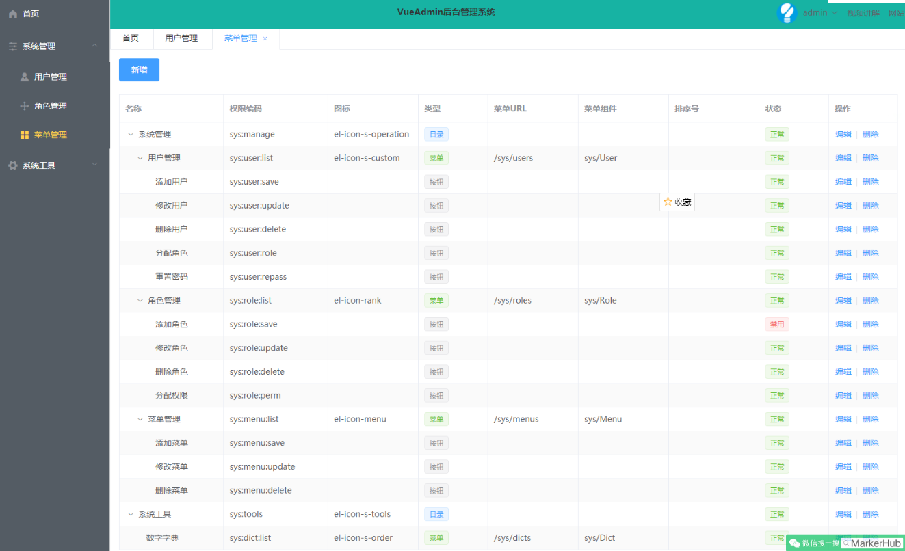
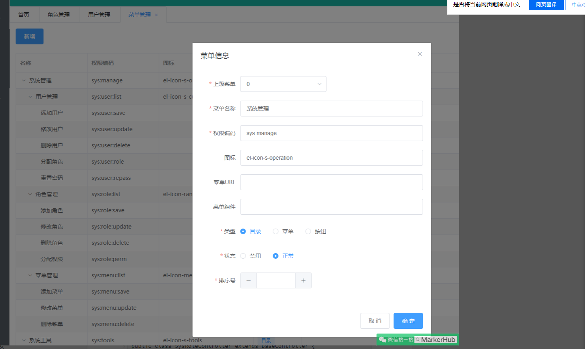
基本上线填好所有菜单的列表和增删改查操作权限，就 ok。
# 10. 角色接口开发
角色的增删改查其实也简单，而且字段这么少，基本上吧菜单的增删改查复制过来，然后把 menu 改成 role，在调整一下就差不多啦。然后有个角色关联菜单的操作，这个我们等下讲讲，先来看代码：
@RestController | |
@RequestMapping("/sys/role") | |
public class SysRoleController extends BaseController { | |
@GetMapping("/info/{id}") | |
@PreAuthorize("hasAuthority('sys:role:list')") | |
public Result info(@PathVariable Long id) { | |
SysRole role = sysRoleService.getById(id); | |
List<SysRoleMenu> roleMenus = sysRoleMenuService.list(new QueryWrapper<SysRoleMenu>().eq("role_id", id)); | |
List<Long> menuIds = roleMenus.stream().map(p -> p.getMenuId()).collect(Collectors.toList()); | |
role.setMenuIds(menuIds); | |
return Result.succ(role); | |
} | |
@GetMapping("/list") | |
@PreAuthorize("hasAuthority('sys:role:list')") | |
public Result list(String name) { | |
Page<SysRole> roles = sysRoleService.page(getPage(), | |
new QueryWrapper<SysRole>() | |
.like(StrUtil.isNotBlank(name), "name", name) | |
); | |
return Result.succ(roles); | |
} | |
@PostMapping("/save") | |
@PreAuthorize("hasAuthority('sys:role:save')") | |
public Result save(@Validated @RequestBody SysRole sysRole) { | |
sysRole.setCreated(LocalDateTime.now()); | |
sysRole.setStatu(Const.STATUS_ON); | |
sysRoleService.save(sysRole); | |
return Result.succ(sysRole); | |
} | |
@PostMapping("/update") | |
@PreAuthorize("hasAuthority('sys:role:update')") | |
public Result update(@Validated @RequestBody SysRole sysRole) { | |
sysRole.setUpdated(LocalDateTime.now()); | |
sysRoleService.updateById(sysRole); | |
return Result.succ(sysRole); | |
} | |
@Transactional | |
@PostMapping("/delete") | |
@PreAuthorize("hasAuthority('sys:role:delete')") | |
public Result delete(@RequestBody Long[] ids){ | |
sysRoleService.removeByIds(Arrays.asList(ids)); | |
// 同步删除 | |
sysRoleMenuService.remove(new QueryWrapper<SysRoleMenu>().in("role_id", ids)); | |
sysUserRoleService.remove(new QueryWrapper<SysUserRole>().in("role_id", ids)); | |
return Result.succ(""); | |
} | |
@Transactional | |
@PostMapping("/perm/{roleId}") | |
@PreAuthorize("hasAuthority('sys:role:perm')") | |
public Result perm(@PathVariable Long roleId, @RequestBody Long[] menuIds) { | |
List<SysRoleMenu> sysRoleMenus = new ArrayList<>(); | |
Arrays.stream(menuIds).forEach(menuId -> { | |
SysRoleMenu roleMenu = new SysRoleMenu(); | |
roleMenu.setMenuId(menuId); | |
roleMenu.setRoleId(roleId); | |
sysRoleMenus.add(roleMenu); | |
}); | |
sysRoleMenuService.remove(new QueryWrapper<SysRoleMenu>().eq("role_id", roleId)); | |
sysRoleMenuService.saveBatch(sysRoleMenus); | |
// 清除所有用户的权限缓存信息 | |
sysUserService.clearUserAuthorityInfoByRoleId(roleId); | |
return Result.succ(menuIds); | |
} | |
} |
上面方法中：
- info 方法
获取角色信息的方法，因为我们不仅仅在编辑角色时候会用到这个方法，在回显角色关联菜单的时候也需要被调用，因此我们需要把角色关联的所有的菜单的 id 也一并查询出来，也就是分配权限的操作。对应到前端就是这样的，点击分配权限，会弹出出所有的菜单列表，然后根据角色已经关联的菜单的 id 回显勾选上已经关联过的。效果如下：
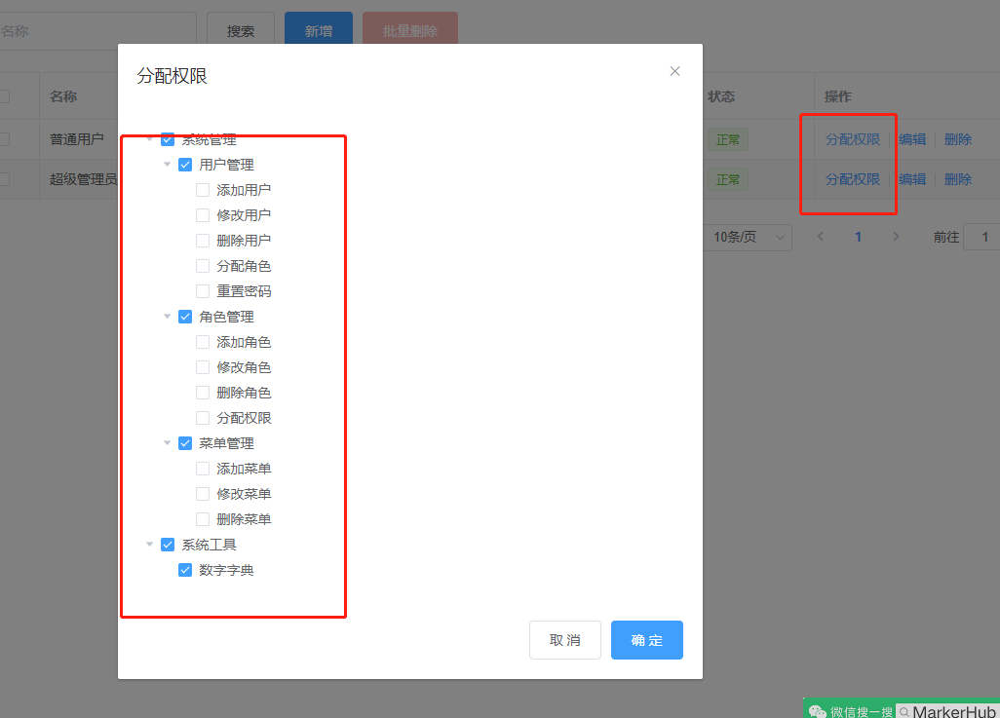
然后点击保存分配权限的时候，我们需要把角色的 id 和所有勾选上的菜单 id 的数组一起传过来，所以才有了 controller 中的这样的写法：
@PreAuthorize("hasAuthority('sys:role:perm')") | |
public Result perm(@PathVariable Long roleId, @RequestBody Long[] menuIds) { | |
...代码上面贴出来 | |
} |
可以看到，因为 @RequestBody，我们知道 menuIds 是否安装 body 里面的，这个需要注意，对应到的前端写法就是这样：
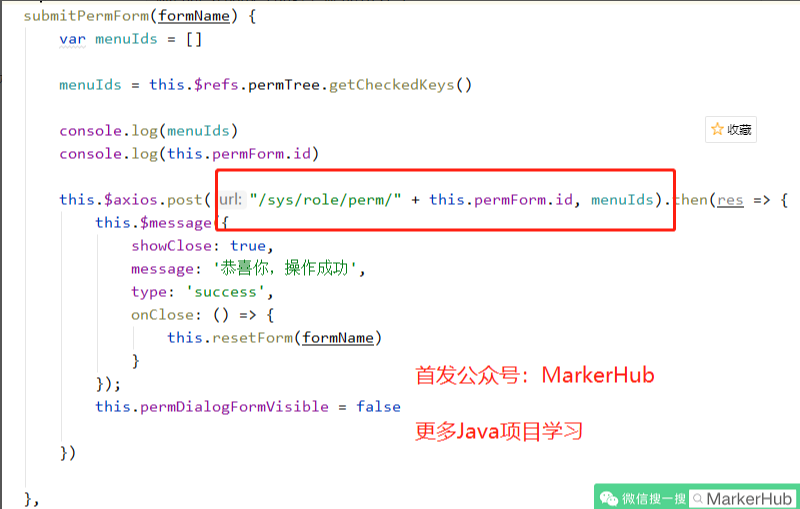
ok，角色管理就讲到这里了，其他增删改查自己看下代码，不难哈。
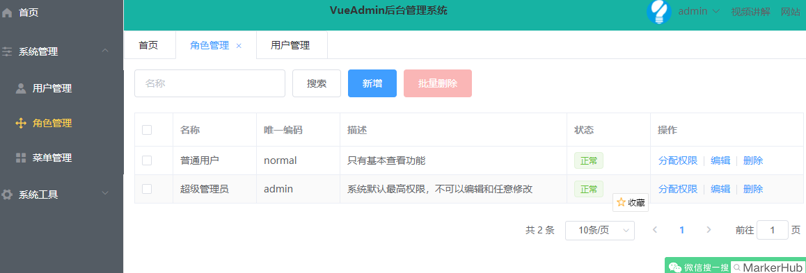
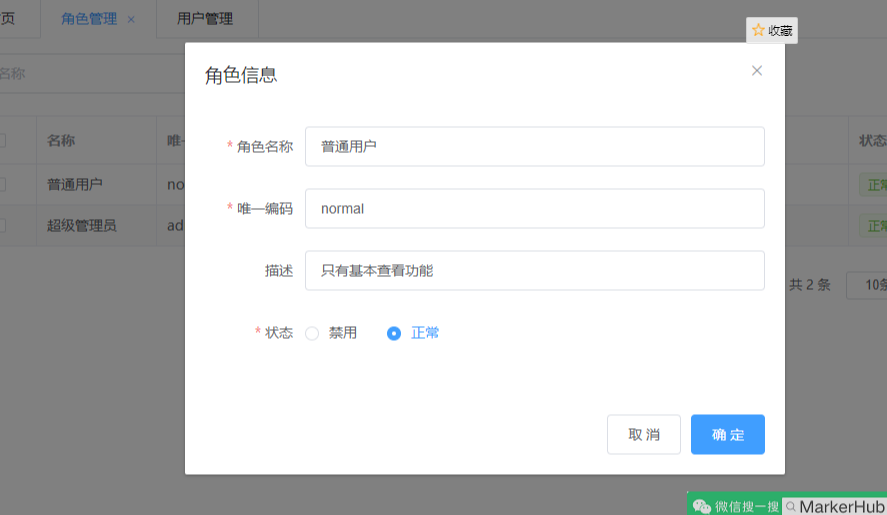
# 11. 用户接口开发
用户管理里面有个用户关联角色的分配角色操作，和角色关联菜单的写法差不多的，其他增删改查也复制黏贴改改就好，哈哈。
- com.markerhub.controller.SysUserController
/** | |
* 公众号：MarkerHub | |
*/ | |
@RestController | |
@RequestMapping("/sys/user") | |
public class SysUserController extends BaseController { | |
@Autowired | |
PasswordEncoder passwordEncoder; | |
@GetMapping("/info/{id}") | |
@PreAuthorize("hasAuthority('sys:user:list')") | |
public Result info(@PathVariable Long id) { | |
SysUser user = sysUserService.getById(id); | |
Assert.notNull(user, "找不到该管理员！"); | |
List<SysRole> roles = sysRoleService.listRolesByUserId(user.getId()); | |
user.setRoles(roles); | |
return Result.succ(user); | |
} | |
/** | |
* 用户自己修改密码 | |
* | |
*/ | |
@PostMapping("/updataPass") | |
public Result updataPass(@Validated @RequestBody PassDto passDto, Principal principal) { | |
SysUser sysUser = sysUserService.getByUsername(principal.getName()); | |
boolean matches = passwordEncoder.matches(passDto.getCurrentPass(), sysUser.getPassword()); | |
if (!matches) { | |
return Result.fail("旧密码不正确！"); | |
} | |
sysUser.setPassword(passwordEncoder.encode(passDto.getPassword())); | |
sysUser.setUpdated(LocalDateTime.now()); | |
sysUserService.updateById(sysUser); | |
return Result.succ(null); | |
} | |
/** | |
* 超级管理员重置密码 | |
*/ | |
@PostMapping("/repass") | |
@PreAuthorize("hasAuthority('sys:user:repass')") | |
public Result repass(@RequestBody Long userId) { | |
SysUser sysUser = sysUserService.getById(userId); | |
sysUser.setPassword(passwordEncoder.encode(Const.DEFAULT_PASSWORD)); | |
sysUser.setUpdated(LocalDateTime.now()); | |
sysUserService.updateById(sysUser); | |
return Result.succ(null); | |
} | |
@GetMapping("/list") | |
@PreAuthorize("hasAuthority('sys:user:list')") | |
public Result page(String username) { | |
Page<SysUser> users = sysUserService.page(getPage(), | |
new QueryWrapper<SysUser>() | |
.like(StrUtil.isNotBlank(username), "username", username) | |
); | |
users.getRecords().forEach(u -> { | |
u.setRoles(sysRoleService.listRolesByUserId(u.getId())); | |
}); | |
return Result.succ(users); | |
} | |
@PostMapping("/save") | |
@PreAuthorize("hasAuthority('sys:user:save')") | |
public Result save(@Validated @RequestBody SysUser sysUser) { | |
sysUser.setCreated(LocalDateTime.now()); | |
sysUser.setStatu(Const.STATUS_ON); | |
// 初始默认密码 | |
sysUser.setPassword(Const.DEFAULT_PASSWORD); | |
if (StrUtil.isBlank(sysUser.getPassword())) { | |
return Result.fail("密码不能为空"); | |
} | |
String password = passwordEncoder.encode(sysUser.getPassword()); | |
sysUser.setPassword(password); | |
// 默认头像 | |
sysUser.setAvatar(Const.DEFAULT_AVATAR); | |
sysUserService.save(sysUser); | |
return Result.succ(sysUser); | |
} | |
@PostMapping("/update") | |
@PreAuthorize("hasAuthority('sys:user:update')") | |
public Result update(@Validated @RequestBody SysUser sysUser) { | |
sysUser.setUpdated(LocalDateTime.now()); | |
if (StrUtil.isNotBlank(sysUser.getPassword())) { | |
String password = passwordEncoder.encode(sysUser.getPassword()); | |
sysUser.setPassword(password); | |
} | |
sysUserService.updateById(sysUser); | |
return Result.succ(sysUser); | |
} | |
@PostMapping("/delete") | |
@PreAuthorize("hasAuthority('sys:user:delete')") | |
public Result delete(@RequestBody Long[] ids){ | |
sysUserService.removeByIds(Arrays.asList(ids)); | |
sysUserRoleService.remove(new QueryWrapper<SysUserRole>().in("user_id", ids)); | |
return Result.succ(""); | |
} | |
/** | |
* 分配角色 | |
* @return | |
*/ | |
@Transactional | |
@PostMapping("/role/{userId}") | |
@PreAuthorize("hasAuthority('sys:user:role')") | |
public Result perm(@PathVariable Long userId, @RequestBody Long[] roleIds) { | |
System.out.println(roleIds); | |
List<SysUserRole> userRoles = new ArrayList<>(); | |
Arrays.stream(roleIds).forEach(roleId -> { | |
SysUserRole userRole = new SysUserRole(); | |
userRole.setRoleId(roleId); | |
userRole.setUserId(userId); | |
userRoles.add(userRole); | |
}); | |
sysUserRoleService.remove(new QueryWrapper<SysUserRole>().eq("user_id", userId)); | |
sysUserRoleService.saveBatch(userRoles); | |
// 清除权限信息 | |
SysUser sysUser = sysUserService.getById(userId); | |
sysUserService.clearUserAuthorityInfo(sysUser.getUsername()); | |
return Result.succ(roleIds); | |
} | |
} |
上面用到一个 sysRoleService.listRolesByUserId，通过用户 id 获取所有关联的角色，用到了中间表，可以写 sql，这里我这样写的：
- com.markerhub.service.impl.SysRoleServiceImpl#listRolesByUserId
@Override | |
public List<SysRole> listRolesByUserId(Long userId) { | |
return this.list( | |
new QueryWrapper<SysRole>() | |
.inSql("id", "select role_id from sys_user_role where user_id = " + userId)); | |
} |
userId 一定要是自己数据库查出来的，千万别让前端传过来啥就直接调用这个方法，不然会可能会被攻击，嘿嘿嘿～最委托就是写完整的 sql，而不是这样半个 sql 的写法。
最后效果如下：
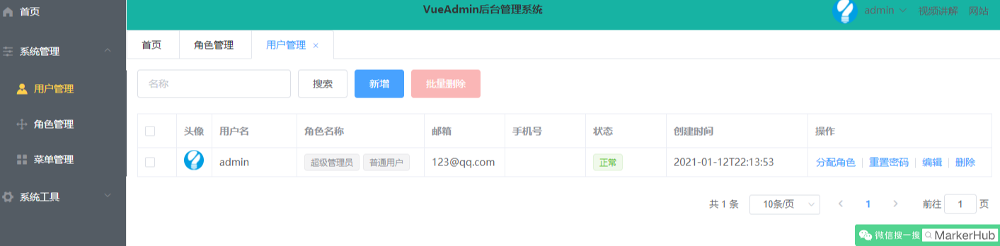
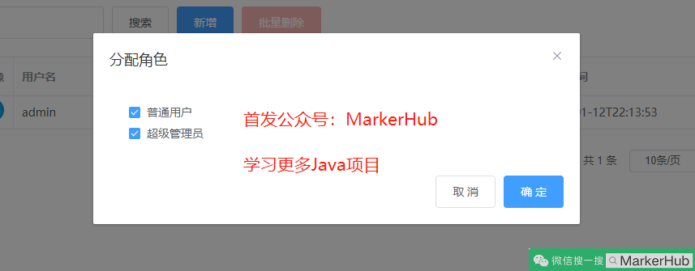
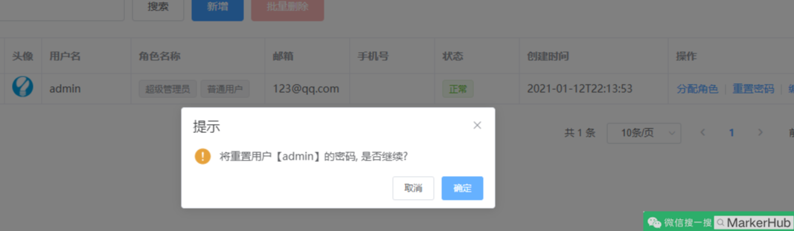
# 12. 项目部署
部署项目其实和 vueblog 的部署是一样的，自己调整一下吧少年，我有写了视频和文档的：
https://www.bilibili.com/video/BV17A411E7aE/
# 13. 项目总结
好了，我们终于又写完了一个项目，希望能让你们学到点东西，这次写的文档有点乱，多多担待，太长了，写着写着就不知道写哪了，哈哈。
原创作者：吕一明
首发公众号：MakerHub
首发 B 站：MarkerHub
转载请保留此声明，感谢！